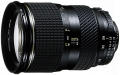

器材库 > 35mm画幅AF变焦镜头 > AT-X 287AF 28-70/2.8 Pro SV

详细规格
镜头类型
标准变焦镜头
发布日期
2002-03-02
焦距
28mm-70mm
最大光圈
f/2.8
最小光圈
f/22
视角（对角）
75.3-34.3
镜头结构
16片/12组
最近对焦距离
50cm
最大放大倍率
0.2
驱动马达
AF马达
滤镜口径
77mm
镜头卡口
Canon EF, Nikon AF, Pentax AF
防抖
否
颜色
黑色
尺寸
84 x 108.5mm
重量
715g
附件
BH776
海滨幕张2013-06-22 10:21
sundongl2013-01-14 20:174.83 分
操作性 5.00耐用性 5.00性价比 5.00解像力 4.50色彩还原 4.50机械结构 5.00
b44148152011-11-13 16:044.08 分
操作性 4.50耐用性 4.00性价比 4.00解像力 3.50色彩还原 4.00机械结构 4.50
fszyu2010-06-20 18:084.83 分
操作性 5.00耐用性 5.00性价比 5.00解像力 4.50色彩还原 4.50机械结构 5.00
产品图 / 样片
外观图
评测 / 相关文章
该产品暂无存档的评测文章